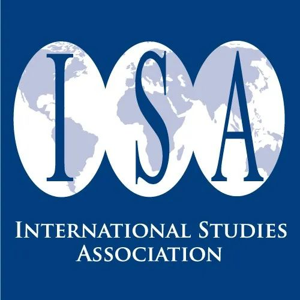
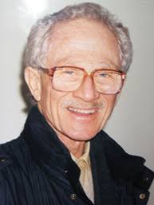
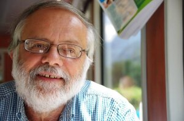

收录于合集 #特刊：ISA主席简介 4个


【简介】 国际研究协会(ISA）第三十一任至第四十五任主席介绍
【编译】 唐一鸣 阮镇炜 朱家羲 宋翔宇 晋玉
【审校】 丁伟航 晋玉 兰星辰 朱文菡
【排版】 苏语涵
31. Maurice East
ISA第31任主席（1991-1992），美国乔治华盛顿大学名誉教授。本科毕业于美国科尔盖特大学，并获得普林斯顿大学硕博学位。研究重点是国际政治，外交政策比较研究，小型国家外交政策。曾任教于丹佛大学、肯塔基大学，并在惠灵顿维多利亚大学进行访问。他曾两次荣获挪威富布莱特奖，并曾在乌干达和新西兰任教和调研。他曾担任美国国防部战略概念发展中心高级研究员，美国国务院和挪威外交部的顾问。曾出版《外交与发展中国家》 （Diplomacy and Developing Nations） ，《国家为何行动》 （Why Nations Act） ，《国际政治分析》 （The Analysis of International Politics） 等。
32. Hayward R. Alker（1937-2007）
ISA第32任主席（1992-1993），曾任教于南加利福尼亚大学、麻省理工学院、耶鲁大学，并且担任布朗大学、威尔士大学、密歇根大学等多所大学的客座教授。研究重点是国际关系核心理论和研究方法，国际政治和安全。本科毕业于麻省理工学院，并获得耶鲁大学硕博学位。其著作有《冲突之旅：叙事和教训》 （Journeys Through Conflict: Narratives and Lessons） 、《再发现和再制定：国际关系研究的人文方法》 （Rediscoveries and reformulations: humanistic methodologies for international studies） 、《挑战性边界：全球流动，领土身份》 （Challenging Boundaries: Global Flows, Territorial Identities） 、《数学与政治学》 （Mathematics and politics） 。
3 3. Charles W. Kegley Jr.（1944-）
ISA第33任主席（1993-1994），南卡罗莱纳州立大学名誉教授，并曾担任乔治敦大学，得克萨斯大学，中国人民大学，新泽西州立罗格斯大学、日内瓦国际高级研究学院的客座教授。著作有《全球未来（第四版）》 （The Global Future 4th Edition） 、《世界政治：趋势与转型》 （World Politics: Trend and Transformation 14th Edition） 、《伊拉克之后：濒临灭绝的美国》 （After Iraq：The Imperiled American Imperium） 。
34. Ted R. Gurr（1936-2017）
ISA第三十四任（1994-1995）主席，马里兰大学名誉教授、荣休教授。曾任教于普林斯顿大学、西北大学以及科罗拉多大学。他是政治冲突与动荡研究领域的先驱，其代表作《为什么人们叛乱》 （Why Men Rebel） 曾获美国政治学会（APSA）的伍德罗·威尔逊奖（Woodrow Wilson Award），后被翻译成多种语言出版。在二十世纪六十年代后期，他领导成立了“政体研究项目”（the Polity project），对提供从1800年到现在的所有独立国家的政治组织进行编码，为研究人员进行比较研究或定量研究提供数据基础。如今，“政体数据”（the Polity data，从1998年开始在Monty G. Marshall和Keith Jaggers的带领下更新）仍是“不同政体类型对国内冲突和国际冲突的影响”这类研究的重要数据基础。
35. Susan Strange（1923-1998）
ISA第三十五任（1995-1996）主席，是担任该职位的第一位英国人。此外，斯特兰奇是1975年成立的英国国际研究协会的联合创始人之一。她是英国国际政治经济学（IPE）学科的奠基者。斯特兰奇于1943年从伦敦政治经济学院（LSE）毕业，并获得经济学专业的一等荣誉学士学位。进入学术界之前，曾先后担任《经济学人》 （the Economist） 和《观察家报》 （the Observer） 的财经记者，以及英国皇家国际事务研究所（Chatham House）的全职研究员。斯特兰奇曾在伦敦政治经济学院、伦敦大学学院（UCL）、华威大学等大学任教。其最有影响力的代表作包括：《赌场资本主义》 （Casino Capitalism） 、《国家与市场》 （States and Markets） 、《国家的撤退》 （The Retreat of the State） 、《疯狂的金钱》 （Mad Money） 。
36. Davis Bobrow（1936-）
ISA第三十六任（1996-1997）主席，匹兹堡大学公共与国际事务荣休教授。他从芝加哥大学、牛津大学获得三个学士学位，后从麻省理工学院（MIT）获得博士学位。曾担任明尼苏达大学和马里兰大学的教授；曾是美国国防科学委员会（Defense Science Board）成员、美国中情局局长的科学技术顾问团（the Science and Technology Advisory Panel to the Director of Central Intelligence）成员。其出版著作包括：《防御性国际主义：在不确定世界中提供公共产品》 （Defensive Internationalism: Providing Public Goods in an Uncertain World ，合著）、《理解对外政策决策》 （Understanding Foreign Policy Decisions） 等。
37 . James A. Caporaso
ISA第三十七任主席，华盛顿大学政治学系荣休教授，专攻国际政治经济学和国际关系理论，讲授“国际政治经济学”和“欧盟政治经济学”课程。曾于1995-97年任欧盟研究协会（EUSA）主席，2003年获ISA颁发的国际政治经济学杰出学者奖。2013年前，任《比较政治研究》主编。曾与David Levine合著《政治经济学理论》一书。目前的研究方向是比较视角下的政治体制和金融危机。
38. Margaret G. Hermann
ISA第三十八任主席，政治心理学家，雪城大学莫伊尼全球事务研究所（Moynihan Institute of Global Affairs）所长，麦克斯韦尔公民和公共事务学院政治学教授。1965年在西北大学取得心理学博士学位，曾在普林斯顿大学任客座讲师，1998年前在俄亥俄州立大学梅森国际安全研究中心任职。专攻政治领导、外交政策决策、危机管理、非国家行为者对外政策的影响、比较外交政策等领域。Margaret G. Hermann教授长期致力于开发远距离评估政府首脑领导风格的技术，拥有300多个领导人的此类数据。在目前的研究中，她致力于探索不同类型的领导人和决策流程对跨国危机管理和过度机制的影响。其针对领导风格的评估体系也适用于恐怖组织、跨国非政府组织和国际组织领导人及其高层管理人员。著有《描述对外政策表现》、《政治心理学》等书。
39. Michael Brecher

ISA第三十九任主席，麦吉尔大学政治学教授，耶鲁大学博士，加拿大皇家学会会员。专攻危机、冲突和战争理论，长期冲突- 敌对行为，外交政策理论和决策，国际体系，中东国际政治（特别是阿以冲突与和平进程）、南亚国际关系等领域。目前正在进行《长期冲突与世界政治》和《阿以冲突》两书的写作。2009年，获美国政治学会终身成就奖
40. Craig Murphy
ISA第四十任主席，克雷格·N·墨菲，韦尔斯利学院政治学教授，格林内尔学院政治学学士，北卡罗来纳大学教堂山分校硕士、博士。除国际研究协会主席外，还曾担任联合国学术委员会主席，以及该委员会杂志《全球治理》的联合创始人。主要著作有《联合国开发计划署：更好的方法？》 (The United Nations Development Programme: A Better Way?) (2006)，《国际标准化组织（ISO）：通过自愿共识进行全球治理》 (The International Organization For Standardization (iso): Global Governance Through Voluntary Consensus) (2009)等。
41. Bruce Bueno de Mesquita
ISA第四十一任主席，布鲁斯·布鲁诺·德·梅斯奎塔，纽约大学政治学系Julius Silver讲座教授、亚历山大•汉密尔顿政治经济学研究中心主任和斯坦福大学胡佛研究所高级研究员。纽约皇后学院文学学士（1967），密歇根大学文学硕士学位和博士（1971）。他通过设立于纽约的咨询公司长期担任美国政府国家安全事务方面的顾问，也为众多公司提供谈判指导与结果预测方面的咨询服务。2001—2002年他担任国际研究学会主席。他是美国艺术与科学院院士、美国对外关系委员会会员以及古根海姆基金会学者。梅斯奎塔迄今出版了17本书，超过120篇论文，并在《纽约时报》、《洛杉矶时报》、《芝加哥论坛报》、《国际先驱论坛报》等报刊上发表过大量文章。主要著作有《国际政治原理》 (Principles of International Politics) (2000)，《独裁者手册: 为什么坏行为几乎总是好政治》 (The Dictator’s Handbook: Why Bad Behavior is Almost Always Good Politics) (2011)，《政治生存的逻辑》 (The Logic of Political Survival) (2003)等。
42. John A. Vasquez

ISA第四十二任主席，约翰·瓦斯奎兹，美国政治学家，伊利诺伊大学厄巴纳- 香槟分校国际关系教授，托马斯·B·麦基学者。波士顿大学政治学学士（1967），雪城大学麦克斯韦学院政治学硕士（1972）、博士（1974）。主要著作有《传染与战争：第一次世界大战的教训》 (Contagion and War: Lessons from the First World War) (2018)，《第一次世界大战的爆发：结构，政治和决策》 (The Outbreak of the First World War: Structure, Politics, and Decision-Making) (2014)，《权力政治的力量：从古典现实主义到新传统主义》 (The Power of Power Politics: From Classical Realism to Neotraditionalism) (1983)等。
43. Steve Smith（1953-）
ISA 第四十三任（2003-2004）主席，是获得此殊荣的第二位非美籍。其在南安普顿大学完成本科和研究生教育，先后获得政治学学士学位、国际关系学硕士学位并最终于1978年获得哲学博士学位。自2002年10月以来其一直担任埃克塞特大学副校长兼首席执行官。其主要利用后实证主义（post- positivist）方法，先后发表近100篇学术论文并著有或合作著有《世界政治全球化》 （The Globalization of World Politics） 、《今日国际关系理论》 （International Relations Theory Today） 、《冷战的过去与现在》 （The Cold War Past and Present） 等大量作品。为国际关系的后现代主义理论研究和安全领域研究做出了巨大贡献。
44. Jacek Kugler（1942-）
ISA第四十四任（2004-2005）主席，现于克莱蒙研究大学政治与经济系担任教授。其在加州大学洛杉矶分校完成政治学学士和硕士学位课程，之后在密歇根大学获得政治学博士学位。其是权力转移理论的创始人之一在。他关于“战争、长期权力过渡和国家政治表现的经济后果”的研究在国际关系学界引发了广泛思考和讨论。此外，他对战争、和平、威慑、政治经济等领域也有深入研究。其代表作主要有《权力过渡：21世纪的策略》 （Power Transitions: Strategies for the 21st Century ） 、《出生，死亡和税收：政治和人口转型》 （Birth, Death and Taxes: Political and Demographic Transition） 、《权力过渡理论的基础》 (Foundations of Power Transition Theory) 等。
45 . William Thompson
ISA第四十五任（2005-2006）主席，现于印第安纳大学政治学系任教。其分别于1968年、1969年、1972年获得华盛顿大学的学士、硕士、博士学位。他的研究兴趣主要集中于对长期的历史结构变化、主要大国的兴衰、长期的经济浪潮及其后果以及战争的影响这几个领域。其著作或合著主要包括《政治的比较分析》 （The Comparative Analysis of Politics） ，《争议中的世界体系分析方法》 （Contending Approaches to World System Analysis） 《政治和经济学的节奏》 （Rhythms in Politics and Economics） ，《全球政治中的海上力量，1494-1993》， （Seapower in Global Politics, 1494-1993） ，《大国与全球斗争，1490-1990》 （The Great Power and Global Struggle, 1490-1990） ，《大国竞争以及全球政治经济学的兴起》 （Great power Rivalries, and The Emergence of the global Political Economy） 等。
添加 “国小政”微信
获取最新资讯


国政学人
支持学术公益与知识传播
微信扫一扫赞赏作者 __赞赏
已喜欢，对作者说句悄悄话
取消 __
发送给作者
发送
最多40字，当前共字
上一页 1/3 下一页
长按二维码向我转账
支持学术公益与知识传播
受苹果公司新规定影响，微信 iOS 版的赞赏功能被关闭，可通过二维码转账支持公众号。